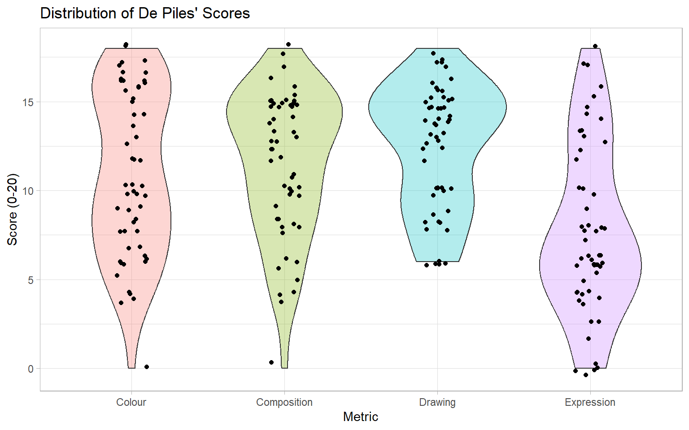
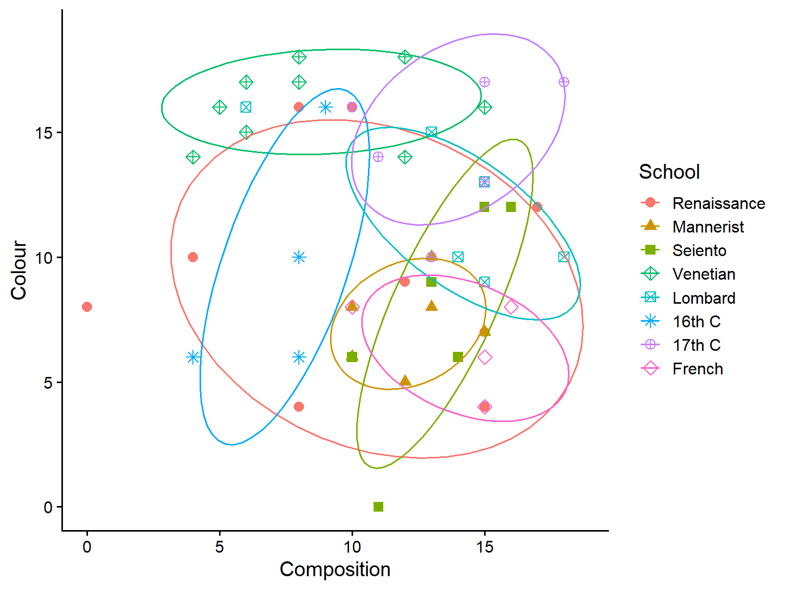
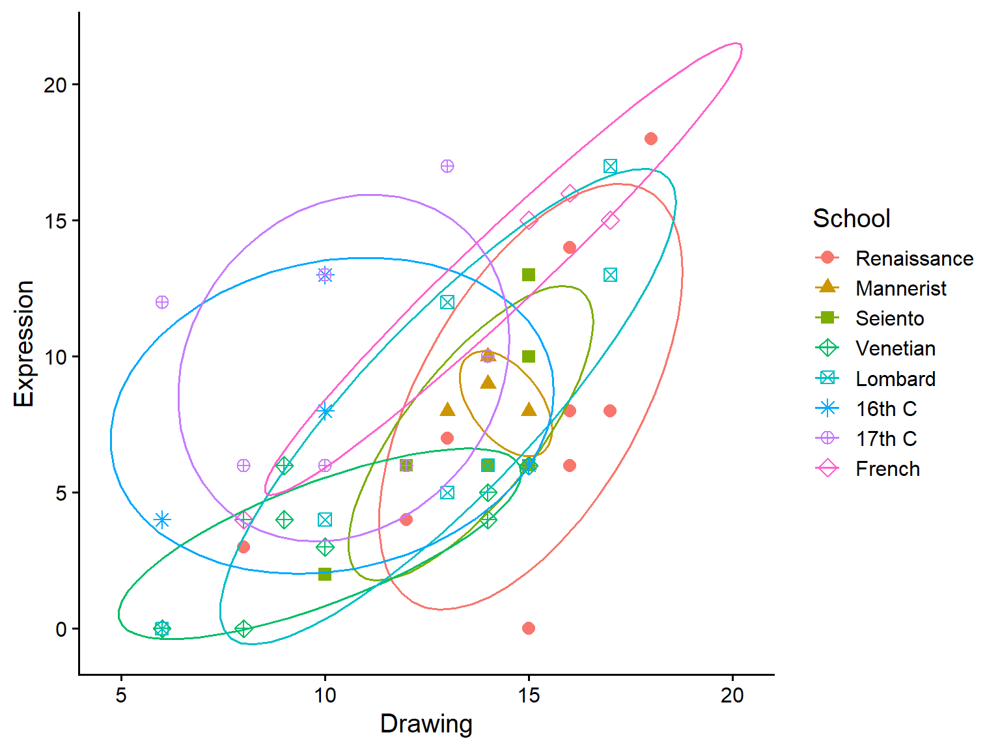
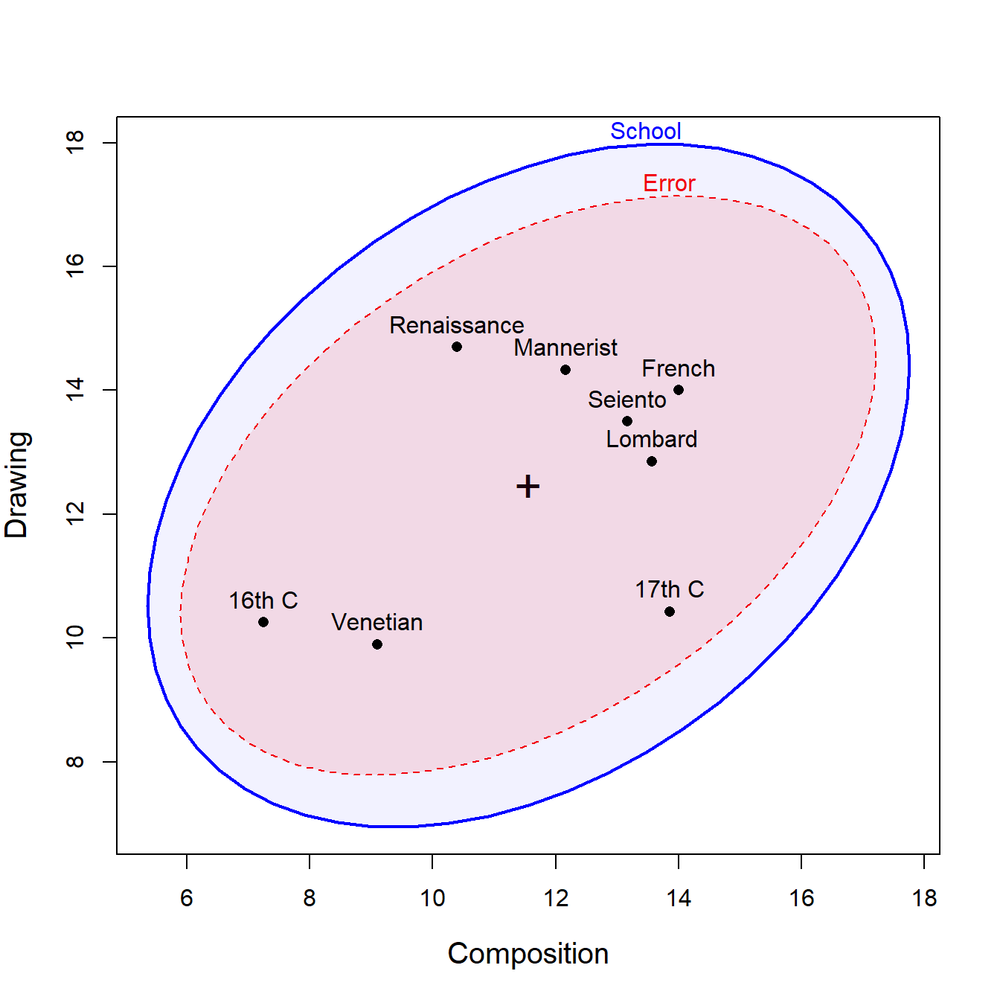
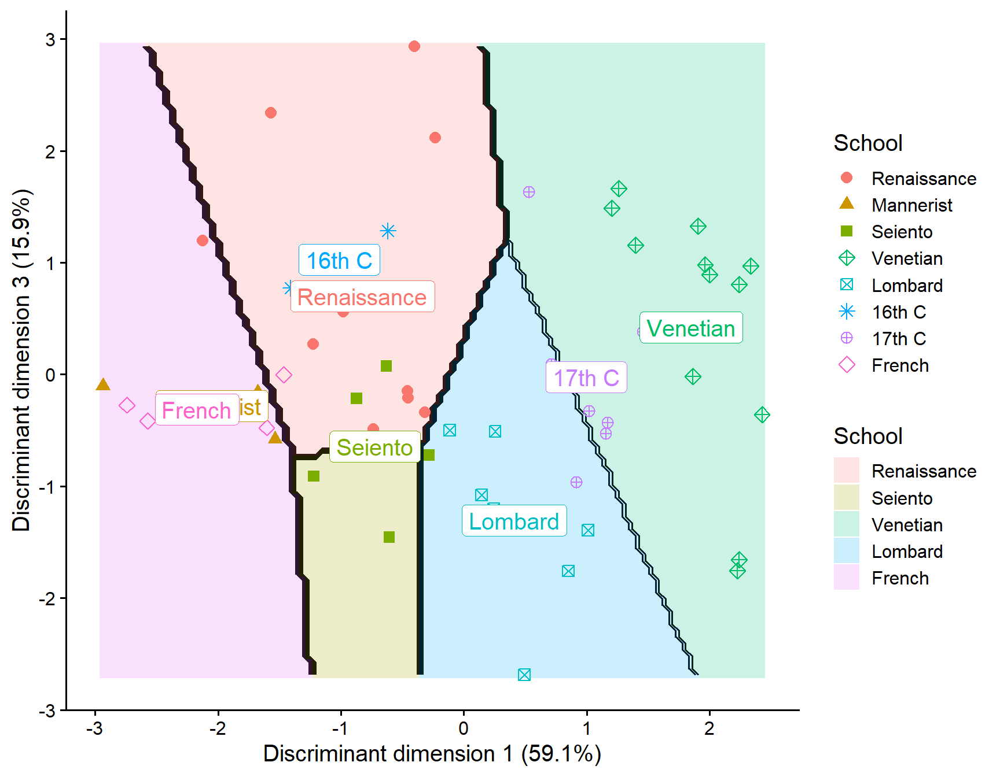

library(MASS)
library(heplots)
library(candisc)
library(ggplot2)
data(painters, package = "MASS")Painters data: HE Plots and Canonical Discriminant Analysis
Vignette built using heplots, version 1.7.8, candisc, version 1.1.0 and ggplot2, version 4.0.0.
Introduction
The painters dataset from the MASS package contains subjective assessments of 54 classical painters on four aesthetic qualities: Composition, Drawing, Colour, and Expression. These ratings, on a scale of 0-20, were made by the 18th century art critic Roger de Piles and reflect his judgment of artistic merit. The painters are classified into eight schools: Renaissance (A), Mannerist (B), Seicento (C), Venetian (D), Lombard (E), Sixteenth Century (F), Seventeenth Century (G), and French (H).
This vignette demonstrates the use of hypothesis-error (HE) plots, canonical discriminant analysis, and discriminant analysis plots to understand how the schools differ in their aesthetic characteristics.
Data Preparation
We begin by using longer, more descriptive labels to identify the schools, making the plots easier to interpret.
school <- c("Renaissance", "Mannerist", "Seiento", "Venetian",
"Lombard", "16th C", "17th C", "French")
levels(painters$School) <- school
head(painters)
## Composition Drawing Colour Expression School
## Da Udine 10 8 16 3 Renaissance
## Da Vinci 15 16 4 14 Renaissance
## Del Piombo 8 13 16 7 Renaissance
## Del Sarto 12 16 9 8 Renaissance
## Fr. Penni 0 15 8 0 Renaissance
## Guilio Romano 15 16 4 14 RenaissanceHow many from each school?
The distribution of painters across schools is unbalanced, with some schools having many more representatives than others.
table(painters$School)
##
## Renaissance Mannerist Seiento Venetian Lombard 16th C
## 10 6 6 10 7 4
## 17th C French
## 7 4Exploratory plots
Before conducting formal multivariate analyses, we explore the data visually. A boxplot shows the distribution of colour scores across schools.
ggplot(data = painters, aes(x = School, y = Colour, fill = School)) +
geom_boxplot() +
labs(title = "Colour Scores Distribution by Painting School",
x = "School",
y = "Colour Score (0-20)") +
theme_bw()
To examine all four aesthetic variables simultaneously, we reshape the data to long format and create violin plots overlaid with individual points.
painters_long <- painters |>
tidyr::pivot_longer(cols = c(Composition, Drawing, Colour, Expression),
names_to = "Metric", values_to = "Score")
ggplot(painters_long, aes(x = Metric, y = Score, fill = Metric)) +
geom_violin(alpha = 0.3) +
geom_jitter(width = 0.1) +
labs(title = "Distribution of De Piles' Scores",
y = "Score (0-20)") +
theme_light() +
theme(legend.position = "none")
Sample scatterplots
Scatterplots of pairs of variables, with data ellipses for each school, reveal the multivariate relationships and potential group separation.
ggplot(painters,
aes(Composition, Colour,
color = School, shape = School)) +
geom_point(size = 3) +
stat_ellipse(level = 0.68) +
scale_shape_manual(values = c(16, 17, 15, 9, 7, 8, 10, 5)) +
theme_classic(base_size = 15)
ggplot(painters,
aes(Drawing, Expression,
color = School, shape = School)) +
geom_point(size = 3) +
stat_ellipse(level = 0.68) +
scale_shape_manual(values = c(16, 17, 15, 9, 7, 8, 10, 5)) +
theme_classic(base_size = 15)
MANOVA: how do the schools differ according to the aesthetic qualities?
We fit a multivariate linear model (MANOVA) to test whether schools differ significantly on the four aesthetic variables considered jointly. The model treats School as the predictor and the four aesthetic scores as a multivariate response.
painters.mod <- lm(cbind(Composition, Drawing, Colour, Expression) ~ School,
data = painters)
coef(painters.mod)
## Composition Drawing Colour Expression
## (Intercept) 10.400 14.7000 9.000 8.20000
## SchoolMannerist 1.767 -0.3667 -1.667 -0.03333
## SchoolSeiento 2.767 -1.2000 -1.500 -1.03333
## SchoolVenetian -1.300 -4.8000 7.100 -5.00000
## SchoolLombard 3.171 -1.8429 2.857 -0.05714
## School16th C -3.150 -4.4500 0.500 -0.45000
## School17th C 3.457 -4.2714 5.857 1.80000
## SchoolFrench 3.600 -0.7000 -2.500 4.30000Check for multivariate outliers
Before interpreting the MANOVA results, we check for multivariate outliers using a chi-square Q-Q plot of squared Mahalanobis distances.
cqplot(painters.mod, id.n = 3)
HE plots
Hypothesis-error (HE) plots provide a visual representation of multivariate hypothesis tests. The H ellipse represents the hypothesis sum of squares and cross-products, while the E ellipse represents error variation. When H extends outside E, there is evidence of a significant effect.
By default, the plot shows the first two variables (Composition and Drawing).
heplot(painters.mod,
fill = TRUE, fill.alpha = c(0.1, 0.05),
cex.lab = 1.25)
We can also examine other pairs of variables, such as Colour and Expression.
heplot(painters.mod,
variables = 3:4,
fill = TRUE, fill.alpha = c(0.1, 0.05),
cex.lab = 1.25)
All pairwise HE plots
To get a comprehensive view of how schools differ across all pairs of variables, we create a matrix of pairwise HE plots.
pairs(painters.mod)
Canonical analysis
Canonical discriminant analysis reduces the dimensionality of the multivariate differences among schools. It finds linear combinations of the original variables that maximize between-group variation relative to within-group variation.
painters.can <- candisc(painters.mod)
painters.can
##
## Canonical Discriminant Analysis for School:
##
## CanRsq Eigenvalue Difference Percent Cumulative
## 1 0.607 1.5425 0.977 59.08 59.1
## 2 0.361 0.5650 0.977 21.64 80.7
## 3 0.293 0.4141 0.977 15.86 96.6
## 4 0.082 0.0893 0.977 3.42 100.0
##
## Test of H0: The canonical correlations in the
## current row and all that follow are zero
##
## LR test stat approx F numDF denDF Pr(> F)
## 1 0.163 3.65 28 156 1.2e-07 ***
## 2 0.415 2.53 18 125 0.0014 **
## 3 0.649 2.17 10 90 0.0267 *
## 4 0.918 1.03 4 46 0.4034
## ---
## Signif. codes: 0 '***' 0.001 '**' 0.01 '*' 0.05 '.' 0.1 ' ' 1
summary(painters.can)
##
## Canonical Discriminant Analysis for School:
##
## CanRsq Eigenvalue Difference Percent Cumulative
## 1 0.60668 1.54248 0.9775 59.078 59.08
## 2 0.36103 0.56502 0.9775 21.640 80.72
## 3 0.29285 0.41413 0.9775 15.861 96.58
## 4 0.08199 0.08931 0.9775 3.421 100.00
##
## Class means:
##
## Can1 Can2 Can3
## Renaissance -0.6271 0.61875 0.4403
## Mannerist -1.0262 0.46630 -0.1778
## Seiento -0.8162 0.45228 -0.6464
## Venetian 1.8849 0.39348 0.3035
## Lombard 0.3351 0.08831 -0.6305
## 16th C -0.7671 -1.00409 1.5057
## 17th C 0.8936 -1.25369 -0.4492
## French -1.7641 -0.86493 -0.2393
##
## std coefficients:
## Can1 Can2 Can3
## Composition 0.2123 0.07302 -1.27525
## Drawing 0.1152 1.17192 -0.02552
## Colour 0.9652 0.11056 0.01597
## Expression -0.5908 -1.22402 0.57720The output shows how many dimensions (canonical variates) are needed to account for the differences among schools, along with the percentage of between-group variance explained by each dimension.
HE plot in canonical space
Plotting the data in canonical space provides the clearest view of group separation, as the canonical dimensions are specifically constructed to maximize differences among schools.
heplot(painters.can,
fill = TRUE, fill.alpha = c(0.1, 0.05),
var.lwd = 2, var.cex = 1.4,
cex.lab = 1.25)
## Vector scale factor set to 3.5333D view
The analysis suggests three significant dimensions of differences among schools. We can visualize all three dimensions simultaneously using a 3D HE plot.
if(requireNamespace("rgl")) {
heplot3d(painters.can, col = c("pink", "brown"))
}Discriminant analysis
Linear discriminant analysis (LDA) provides another approach to understanding group differences and can be used for classification. Unlike canonical discriminant analysis, which focuses on visualization and interpretation, LDA is optimized for predicting group membership.
painters.lda <- lda(School ~ Composition + Drawing + Colour + Expression,
data = painters)
painters.lda
## Call:
## lda(School ~ Composition + Drawing + Colour + Expression, data = painters)
##
## Prior probabilities of groups:
## Renaissance Mannerist Seiento Venetian Lombard 16th C
## 0.18519 0.11111 0.11111 0.18519 0.12963 0.07407
## 17th C French
## 0.12963 0.07407
##
## Group means:
## Composition Drawing Colour Expression
## Renaissance 10.40 14.70 9.000 8.200
## Mannerist 12.17 14.33 7.333 8.167
## Seiento 13.17 13.50 7.500 7.167
## Venetian 9.10 9.90 16.100 3.200
## Lombard 13.57 12.86 11.857 8.143
## 16th C 7.25 10.25 9.500 7.750
## 17th C 13.86 10.43 14.857 10.000
## French 14.00 14.00 6.500 12.500
##
## Coefficients of linear discriminants:
## LD1 LD2 LD3 LD4
## Composition 0.05735 -0.01973 -0.344511 -0.08775
## Drawing 0.03762 -0.38279 -0.008335 0.23755
## Colour 0.29469 -0.03376 0.004877 0.15250
## Expression -0.13497 0.27962 0.131856 0.11953
##
## Proportion of trace:
## LD1 LD2 LD3 LD4
## 0.5908 0.2164 0.1586 0.0342We can examine the confusion matrix to see how well the discriminant function classifies painters into their actual schools:
class_table <- table(
actual = painters$School,
predicted = predict(painters.lda)$class
)
class_table
## predicted
## actual Renaissance Mannerist Seiento Venetian Lombard 16th C 17th C
## Renaissance 5 0 1 2 0 0 0
## Mannerist 4 1 1 0 0 0 0
## Seiento 0 2 2 0 2 0 0
## Venetian 0 0 0 9 0 0 1
## Lombard 0 0 0 1 4 0 1
## 16th C 1 0 0 0 0 2 1
## 17th C 1 0 0 1 1 0 4
## French 0 0 1 0 0 0 0
## predicted
## actual French
## Renaissance 2
## Mannerist 0
## Seiento 0
## Venetian 0
## Lombard 1
## 16th C 0
## 17th C 0
## French 3The plot_discrim() function visualizes the discriminant analysis results by plotting observations in the space defined by the discriminant dimensions (LD1, LD2, etc.). Here we plot the first two discriminant dimensions:
plot_discrim(painters.lda, LD2 ~ LD1,
labels = TRUE,
labels.args = list(geom = "label")) +
scale_shape_manual(values = c(16, 17, 15, 9, 7, 8, 10, 5)) +
theme_classic(base_size = 15) +
theme(legend.position = "none")
We can also examine other pairs of discriminant dimensions, such as LD1 and LD3:
plot_discrim(painters.lda, LD3 ~ LD1,
labels = TRUE,
labels.args = list(geom = "label")) +
scale_shape_manual(values = c(16, 17, 15, 9, 7, 8, 10, 5)) +
theme_classic(base_size = 15)
Summary
This vignette has demonstrated the use of HE plots, canonical discriminant analysis, and discriminant analysis plots to understand how classical painting schools differ in their aesthetic characteristics. HE plots provide intuitive visual tests of multivariate hypotheses, canonical analysis reveals the dimensions of maximum group separation, and discriminant analysis plots show how well groups can be distinguished and classified in reduced dimensional space.